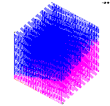

The objective is to create a rectangular mesh using the createpts/brick command.A rectangular geometry is defined that contains a cut-plane defining the boundary between two materials. The createpts/brick command is used to create a point distribution within the geometry and a nearest neighbor connectivity list. The output consists of one gmv file.
Images of GMV output
View A View B

Input file
TEST createpts/brick (lagrit_input_createbrick)
*
* Simple Example to create a retangular
grid that
* captures the geometry of an interface
in the
* stair steps of a regular grid.
*
* Carl Gable 3/12/98
*
* Create a cmo with hexahedral storage
arrays
cmo/create/cmo/ / / hex
* Define the exterior and a plane
surface/cube/reflect/box/0.0,0.0,0.0/1.0,1.0,1.0/
surface/cutplane/intrface/plane/0.,0.,.1/1.,0.,.5/1.,1.,.8
* Define the material regions
mregion/mattop/le cube and gt cutplane/
mregion/matbot/le cube and lt cutplane
* Create a rectangular grid
creatpts/brick/xyz/21,5,41/0.,0.,0./1.,1.,1./1
1 1
*rzbrick/xyz/21,5,41/0.,0.,0./1.,1.,1./1
1 1
* Color the nodes according to the
mregions
setpts
* Color the elements according to
the mregions
settets
* Output the final grid
dump/gmv/output_createbrick.gmv
* begin compare here
cmo/status
cmo/printatt//-all-/minmax
quality